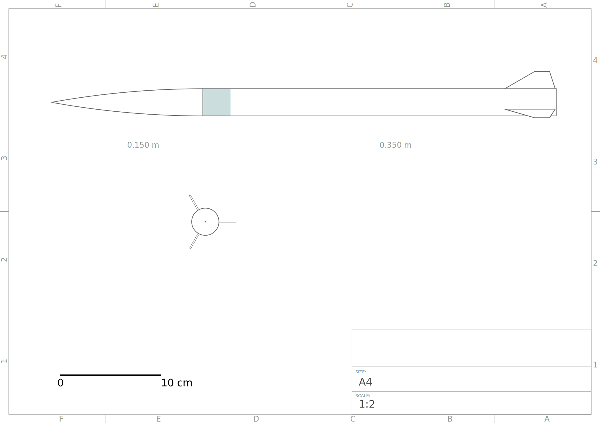
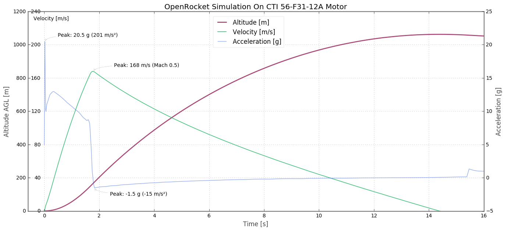

OpenRocket Simulation
Basic flights of the rocket are simulated in OpenRocket
- Download: 24mm_minimum_dia.ork
Table of Contents:
Drawing
Diagram of the OpenRocket design:

Flight Characteristics
The empty rocket (no motor parts) weighs 149.9 grams.
Flying on a CTI 56-F31-12A would expect and altitude of 1062 meters.
